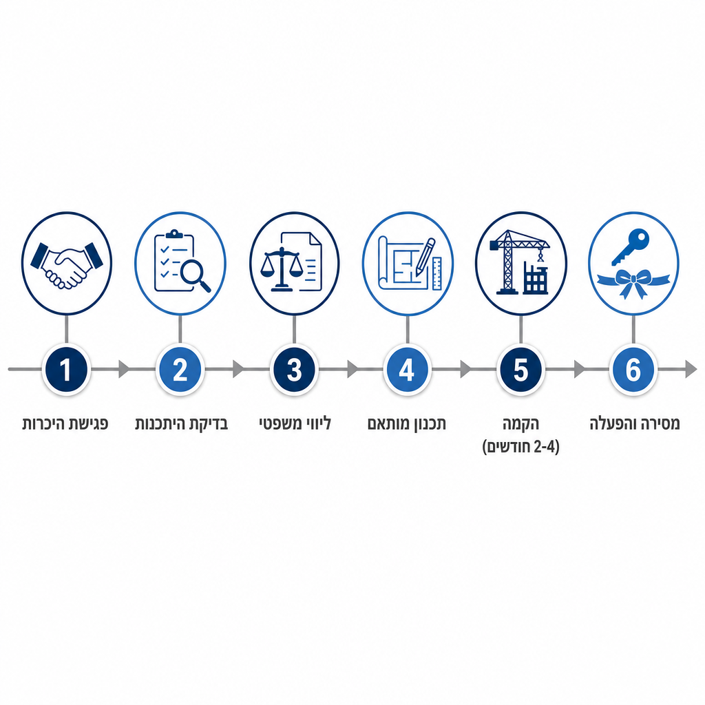

מגרש שיש לכם כבר — אולם ספורט שעוד אין לכם
הופכים מגרש ספורט פתוח וקיים לאולם תקני, מקורה ופעיל כל השנה — תוך חודשים, לא שנים.
המחסור באולמות ספורט הוא לא חדש — והוא לא נפתר
- כ-66% מבתי הספר בישראל (כ-3,500 מתוך כ-5,300) פועלים ללא אולם ספורט תקני — לפי דו"ח מבקר המדינה
- הצורך הכולל במתקני ספורט בישראל מוערך ב-14.9 מיליארד ש"ח, מול תקציב ממשלתי זמין של 2.89 מיליארד ש"ח בלבד עד 2031
- גם כשיש תקציב מאושר — התור ארוך, והזמן עד לקבלת אולם בנוי נמדד בשנים
- הפער פוגע בעיקר באוכלוסיות שכבר סובלות ממחסור בנגישות — פריפריה, אשכולות סוציו-אקונומיים נמוכים, ובפרט בנות וקבוצות נשים
התשתית כבר קיימת — היא רק לא מנוצלת
- ברוב בתי הספר, הספורטקים והמתנ"סים כבר קיים מגרש ספורט פתוח, לעיתים גם עם תאורה וגידור
- המגרש עומד ריק חלק ניכר משעות היממה והשנה — בגלל חום, קור, גשם או רוח
- אין צורך בקרקע חדשה, בתכנון אדריכלי מאפס או בתהליך רישוי מלא של מבנה ציבורי חדש
- הפתרון: להוסיף "שכבה" על מה שכבר קיים — ולא לבנות הכול מחדש
מה כולל הקירוי
- מעטפת קירוי בבנייה קלה — שלד נושא וציפוי חיצוני עמיד
- פרקט ספורט תקני, מתאים לכדורסל, כדוריד, כדורעף וכדורשת/פוטסל
- מיזוג אוויר מלא לפעילות נוחה בכל עונות השנה
- ציוד תקני: סלי כדורסל, שעוני משחק דיגיטליים, מסך לד
- שירותים וחדרי הלבשה — התשתית הנדרשת לאולם ספורט מלא

אותו אולם, שבריר מהעלות והזמן
| פרמטר | קירוי בבנייה קלה | אולם ספורט קונבנציונלי |
|---|---|---|
| עלות הקמה | 1.5-2 מיליון ש"ח | 5-6 מיליון ש"ח בממוצע; עד 8-15 מיליון בפרויקטים מיוחדים |
| זמן הקמה | 2-4 חודשים | 2-3 שנים |
| תלות בקרקע | מנצל מגרש קיים | דורש תכנון ובנייה מאפס |
כ-15-25% מעלות אולם קונבנציונלי בלבד, ופי 6-15 מהיר יותר.
בנייה לפי הכללים, לא בעקיפתם
- עמידה בת"י 5515 — התקן הישראלי לבטיחות מתקני ספורט (סלים, שערים, טבעות, ציוד כדוריד/כדורעף, מחיצות)
- שימוש ברכיבים העוברים בדיקה ואישור תקן, לרבות בדיקה שנתית של מכון התקנים
- כל פרויקט מלווה בבדיקה משפטית פרטנית מול הרשויות הרלוונטיות — עמידה מלאה בדרישות היתר בנייה ורישוי עסק
- גישה מבוססת על שיטות בנייה קלה מוכחות בתחום, המיושמות כבר במאות פרויקטים ציבוריים בישראל
גמישות במודל ההתקשרות — לפי הצרכים והתקציב שלכם
מסלול א׳ — רכישה מלאה על ידי הרשות/המוסד
- הרשות מזמינה ורוכשת את הפתרון במלואו; הבעלות עליו — של הרשות/המוסד, מהיום הראשון
- מתאים לגופים עם תקציב ייעודי (עצמי או בתמיכת מפעל הפיס/קרן הטוטו)
מסלול ב׳ — מודל שיתופי
- החברה משקיעה בהקמת המתקן, מפעילה ומתחזקת אותו
- הרשות/המוסד נהנים משימוש בתנאים מוסכמים מראש — מפחית משמעותית את הנטל התקציבי המיידי
מפנייה ראשונית ועד מסירת מפתח
- פגישת היכרות וסיור באתר — הכרת המגרש הקיים והצרכים
- בדיקת היתכנות ובחירת מסלול — רכישה מלאה או מודל שיתופי
- ליווי משפטי ורגולטורי — בדיקת דרישות היתר בנייה ורישוי עסק
- תכנון מותאם — התאמת מפרט הקירוי, הציוד וענפי הספורט
- הקמה — 2-4 חודשי עבודה בפועל
- מסירה והפעלה — הדרכה, תחזוקה שוטפת ותמיכה

אולם אחד, ענף ספורט אחר בכל שעה
- פעילות ספורט מגוונת בכל השנה: כדורסל, כדוריד, כדורעף, כדורשת/פוטסל והתעמלות
- שימוש כפול: שעות לימודים לבית הספר, שעות פנאי לקהילה — חוגים, ליגות עממיות, קבוצות נשים וילדות
- מענה ישיר לפער הנגישות הקיים היום בפריפריה וביישובים עם מחסור במתקני ספורט
- מרחב נוסף לאירועי קהילה, טקסים וכנסים — לא רק ספורט
בואו נראה איך זה נראה אצלכם
- פגישת היכרות קצרה, ללא התחייבות
- סיור באתר וניתוח ראשוני של המגרש הקיים אצלכם
- הצעת מסלול מותאמת — רכישה מלאה או מודל שיתופי
ליצירת קשר: [פרטי התקשרות של החברה]